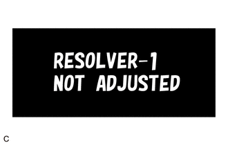
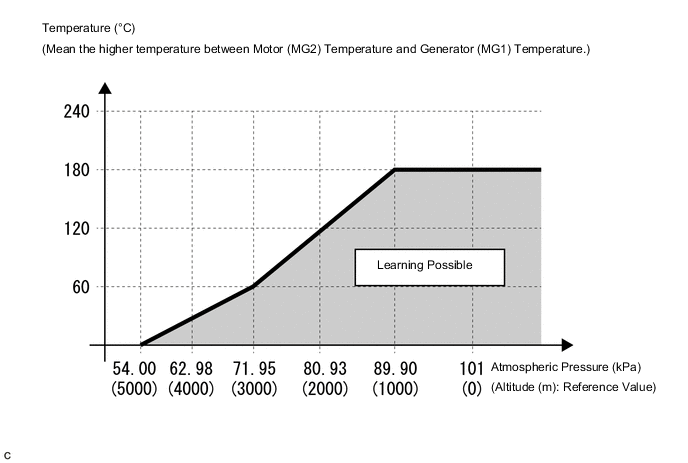
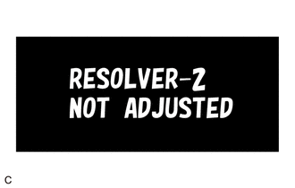

ALL READINESS
Tech Tips
With "All Readiness", you can check whether or not the DTC judgment has been completed by using the GTS.
Check "All Readiness" after simulating malfunction symptoms or for validation after finishing repairs.
Connect the GTS to the DLC3.
Turn the power switch on (IG).
Turn the GTS on.
Clear the DTCs (even if no DTCs are stored, perform the clear DTC procedure).
Turn the power switch off and wait for at least 2 minutes.
Turn the power switch on (IG).
Turn the GTS on.
Perform the DTC confirmation driving pattern to run the DTC judgment.
Enter the following menus: Powertrain / Motor Generator / Utility / All Readiness.
| Tester Display |
|---|
| All Readiness |
Input the DTCs to be confirmed.
Check the DTC judgment result.
| GTS Display | Description |
|---|---|
| NORMAL |
|
| ABNORMAL |
|
| INCOMPLETE |
|
| N/A |
|
If the judgment result shows INCOMPLETE or N/A, perform the DTC confirmation driving pattern again.
Turn the power switch off.
CHECK FOR DIAGNOSIS RELATED INFORMATION
Connect the GTS to the DLC3.
Turn the power switch on (IG).
Turn the GTS on.
Enter the following menus: Powertrain / Motor Generator / Utility / Diagnosis Related Information.
| Tester Display |
|---|
| Diagnosis Related Information |
Check the diagnosis related information and freeze frame data, and then write them down.
CLEAR DIAGNOSIS RELATED INFORMATION
Connect the GTS to the DLC3.
Turn the power switch on (IG).
Turn the GTS on.
Enter the following menus: Powertrain / Motor Generator / Clear DTCs.
Clear the diagnosis related information and freeze frame data.
RESOLVER INITIALIZATION
Note
The resolver learned values cannot be initialized by disconnecting the cable from the negative (-) auxiliary battery terminal or removing a fuse.
If resolver learning is not performed after the inverter with converter assembly or a part related to the hybrid transaxle assembly has been replaced, the following DTCs may be stored and the symptoms may occur:
DTC output
P0BFF1D (Drive Motor "A" Circuit Current Out of Range)
P0C1900 (Drive Motor "A" Execution Torque Performance)
P0C7917 (Drive Motor "A" Inverter Voltage Sensor (VH) Circuit Voltage Above Threshold)
P0D3319 (DC/DC Converter Circuit Current Above Threshold)
P0E7100 (Generator Execution Torque Performance)
P1C5D19 (Drive Motor "A" Inverter Circuit Current Above Threshold)
P1C5F19 (Generator Inverter Circuit Current Above Threshold)
P1CA51D (Hybrid Generator Circuit Current Out of Range)
Slight vibration at a vehicle speed of 5 km/h (3 mph) or less
Shock or vibration during acceleration
Perform resolver initialization and/or learning according to the following table:
| Part Replaced or Procedure Performed | Learning | Initialization |
|---|---|---|
| Inverter with converter assembly | ○ | - |
| Hybrid vehicle transaxle assembly | ○ | ○*1 |
○: Necessary
-: Not necessary
*1: If it is necessary to replace the hybrid vehicle transaxle assembly, make sure to perform resolver initialization before starting work.
Tech Tips
After performing resolver initialization, "Learning not completed" will be displayed on the multi-information display when the power switch is turned on (READY).
| Data List | Detail |
|---|---|
| Generator Resolver Offset Value | Displays the resolver learning value. Displays 0 after the inverter with converter assembly has been replaced (and learning has not been performed) or resolver initialization has been performed. Displays the resolver installation offset amount after resolver learning is performed. |
| Generator Resolver Offset Complete Status | Displays the completion status of the resolver learning. Displays ON when resolver learning is complete. |
| Motor Resolver Offset Value | Displays the resolver learning value. Displays 0 after the inverter with converter assembly has been replaced (and learning has not been performed) or resolver initialization has been performed. Displays the resolver installation offset amount after resolver learning is performed. |
| Motor Resolver Offset Complete Status | Displays the completion status of the resolver learning. Displays ON when resolver learning is complete. |
Related Data List Item:
Ready ON Status
Vehicle Speed
Shift Position
Accelerator Position
Motor Revolution
Generator Revolution
Motor Temperature
Generator Temperature
Inverter Coolant Temperature
Ambient Temperature
Atmospheric Pressure
Initialize the learned value.
Turn the power switch off and wait for 2 minute or more.
Connect the GTS to the DLC3.
Turn the power switch on (IG).
Turn the GTS on.
Enter the following menus: Powertrain / Motor Generator / Utility / Resolver Learning/Initialization.
| Tester Display |
|---|
| Resolver Learning/Initialization |
According to the display on the GTS, select "Initialization" to perform resolver initialization.
Note
Do not turn the power switch on (READY) while performing resolver initialization. If the power switch is turned on (READY) and the engine starts, generator resolver learning will be performed and resolver initialization will be canceled.

Check that the generator resolver learning incomplete message is displayed on the multi-information display.
Turn the power switch off and wait for 1 minute or more.
Turn the power switch on (IG).
RESOLVER LEARNING
Note
The resolver learned values cannot be initialized by disconnecting the cable from the negative (-) auxiliary battery terminal or removing a fuse.
If resolver learning is not performed after the inverter with converter assembly or a part related to the hybrid transaxle assembly has been replaced, the following DTCs may be stored and the symptoms may occur:
DTC output
P0BFF1D (Drive Motor "A" Circuit Current Out of Range)
P0C1900 (Drive Motor "A" Execution Torque Performance)
P0C7917 (Drive Motor "A" Inverter Voltage Sensor (VH) Circuit Voltage Above Threshold)
P0D3319 (DC/DC Converter Circuit Current Above Threshold)
P0E7100 (Generator Execution Torque Performance)
P1C5D19 (Drive Motor "A" Inverter Circuit Current Above Threshold)
P1C5F19 (Generator Inverter Circuit Current Above Threshold)
P1CA51D (Hybrid Generator Circuit Current Out of Range)
Slight vibration at a vehicle speed of 5 km/h (3 mph) or less
Shock or vibration during acceleration
Perform resolver initialization and/or learning according to the following table:
| Part Replaced or Procedure Performed | Learning | Initialization |
|---|---|---|
| Inverter with converter assembly | ○ | - |
| Hybrid vehicle transaxle assembly | ○ | ○*1 |
○: Necessary
-: Not necessary
*1: If it is necessary to replace the hybrid vehicle transaxle assembly, make sure to perform resolver initialization before starting work.
Tech Tips
After performing resolver initialization, "Learning not completed" will be displayed on the multi-information display when the power switch is turned on (READY).
| Data List | Detail |
|---|---|
| Generator Resolver Offset Value | Displays the resolver learning value. Displays 0 after the inverter with converter assembly has been replaced (and learning has not been performed) or resolver initialization has been performed. Displays the resolver installation offset amount after resolver learning is performed. |
| Generator Resolver Offset Complete Status | Displays the completion status of the resolver learning. Displays ON when resolver learning is complete. |
| Motor Resolver Offset Value | Displays the resolver learning value. Displays 0 after the inverter with converter assembly has been replaced (and learning has not been performed) or resolver initialization has been performed. Displays the resolver installation offset amount after resolver learning is performed. |
| Motor Resolver Offset Complete Status | Displays the completion status of the resolver learning. Displays ON when resolver learning is complete. |
Related Data List Item:
Ready ON Status
Vehicle Speed
Shift Position
Accelerator Position
Motor Revolution
Generator Revolution
Motor Temperature
Generator Temperature
Inverter Coolant Temperature
Ambient Temperature
Atmospheric Pressure
Resolver Learning
Tech Tips
If either of the following conditions is met, resolver learning may not be possible:
The inverter coolant temperature is -40°C or less.
The atmospheric pressure is low and the motor (MG2) temperature is high. (Wait for the motor (MG2) to cool sufficiently before performing learning.)

After beginning resolver learning, make sure to perform the procedure until resolver learning for both the generator (MG1) and motor (MG2) are completed. (Resolver learning is complete when the resolver learning incomplete message on the multi-information is cleared.)
Turn the power switch off and wait for 2 minute or more.
Connect the GTS to the DLC3.
Turn the power switch on (IG).
Check that the air conditioning system and power outlet socket are turned off.
Check that the generator resolver learning incomplete message is displayed on the multi-information display.
Turn the GTS on.
Check for DTCs make sure no DTCs are output.
(If any DTCs which may affect learning are output, resolver learning cannot be performed.)
Enter the following menus: Powertrain / Motor Generator / Utility / Resolver Learning/Initialization.
| Tester Display |
|---|
| Resolver Learning/Initialization |
According to the display on the GTS, select "Learning" to start resolver learning.
Turn the power switch on (READY) and wait until the READY indicator changes from blinking to illuminated.
Note
Do not operate the accelerator pedal, shift lever or any switches until the READY indicator is illuminated.
Tech Tips
When the power switch is turned on (READY) during resolver learning, the engine will start.
It takes approximately 10 seconds for the READY indicator to illuminate after the power switch is turned on (READY).

Check that the motor resolver learning incomplete message is displayed on the multi-information display.
Select drive (D).
Accelerate the vehicle to between 30 km/h and 40 km/h, fully release the accelerator pedal and allow the vehicle to coast for 3 seconds. (*1)
Note
Do not operate the accelerator pedal, brake pedal, shift lever or any switches while the vehicle is coasting.
Tech Tips
If any of the following conditions are met, resolver learning may not be possible:
A shift state other than drive (D) is selected.
The vehicle speed is excessively low or high.
The vehicle is being driven on a rough road or steep hill causing the vehicle speed to fluctuate while the vehicle is coasting.
The hybrid vehicle transaxle assembly temperature is excessively low.
(If the hybrid vehicle transaxle assembly temperature is excessively low, such as (0°C (32°F) or less), the vehicle speed will decrease excessively while the vehicle is coasting. )
The POWER drive mode is selected.
The driving support system is turned on.
Check that the motor resolver learning incomplete message is not displayed on the multi-information display.
Tech Tips
If the motor resolver learning incomplete message continues to be displayed on the multi-information display, perform step (*1) again.
Stop the vehicle, turn the power switch off and wait for 1 minute or more.
Turn the power switch on (READY).
Check that the generator resolver learning incomplete and motor resolver learning incomplete messages are not displayed on the multi-information display.
Tech Tips
If the power switch is turned on (IG) after less than 1 minute has elapsed since the power switch was turned off, the learned value may not be stored correctly and the generator resolver learning incomplete or motor resolver learning incomplete message may be displayed on the multi-information display.